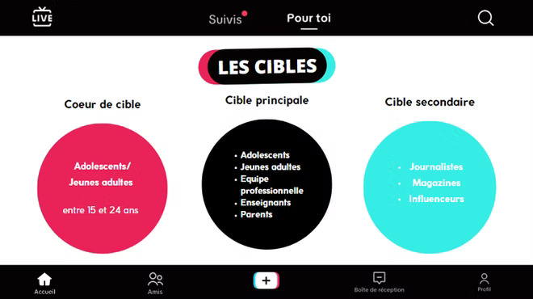

Communication
Après avoir choisi ma spécialisation dans le parcours marketing digital, e-business et entrepreneuriat, j'ai suivi des cours spécifiques au marketing digital. Tout d'abord, nous avons eu des cours de communication en lien avec le digital. J'ai ainsi pu apprendre des termes techniques tels que le modèle PESO, les concepts de SEO/SEA/SEM, les différents types de comportements des utilisateurs sur les sites web, l'importance du parcours d'achat et la réalisation d'un calendrier éditorial. Tout ces termes m'ont été nécessaire lors de ma création de site web, autant pour ma SAE que le site web où vous êtes actuellement. Ensuite, j'ai appris les bases de la communication sur les réseaux sociaux, le rôle des influenceurs et les activités qui entourent ce métier.
Cette année, j'ai eu l'opportunité de réaliser une campagne de communication via TikTok. En effet, nous devions, par groupes de 4, réaliser un TikTok de 45 secondes à 1 minute. Tous les membres du groupe devaient apparaître dans la vidéo, qui était destinée aux parents d'élèves ou aux élèves de lycées intéressés par l'IUT de Châtellerault, tout en y ajoutant une note d'humour. J'ai donc analysé deux TikToks de deux IUT différents afin d'étudier la concurrence et les tendances actuelles. Voici les cibles du Tik Tok que j'ai pu créer avec mon équipe :

Voici un support de communication que j'ai réalisé dans le cadre de mon projet transverse avec les Cordées de la Réussite. C'est un dispositif national à but éducatif, créé en France en 2008, et mis en place pour favoriser la réussite scolaire et l'orientation des jeunes issus de milieux sociaux défavorisés. Le projet vise à encourager ces jeunes à s'engager dans des études supérieures et à les accompagner tout au long de leur parcours éducatif. L'objectif de cette affiche est de présenter notre projet de manière claire et précise.
J'ai également créée un carton d'invitation à destinations des invités, c'est-à-dire des parents d'élèves, professeurs ainsi que de nos commanditaires. Voici le carton d'invitation :
Durant cette année, j'ai également eu l'occasion de présenter, sous forme de plateau télévisé, ce qu'est l'inbound marketing afin de rendre la définition claire, de manière ludique et plus attractive. Voici ci-dessous des extraits de mon diaporama de présentation :
Afin de voir davantage de mes créations visuelles, je vous invite à consulter l'épisode "E-Business et Entrepreneuriat" ainsi qu'à regarder mes mini-séries à propos de mes stages.